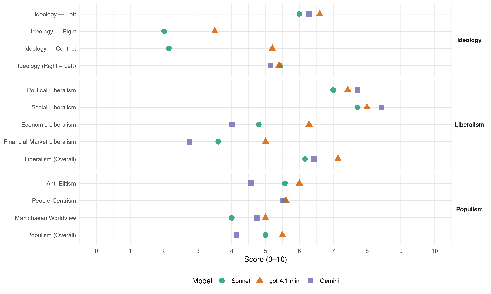

ERC (Spain, 2011)
manifesto_id 33905_201111
Get full text: This site shows derived annotations and short verbatim quotes only. The full manifesto text is © Manifesto Project / WZB — obtain it via manifesto-project.wzb.eu using the manifesto_id above.
Headline scores
| Dimension | Sonnet | gpt-4.1-mini | Gemini |
|---|---|---|---|
| Populism (Overall) | 5.0 | 5.5 | 4.1 |
| Anti-Elitism | 5.6 | 6.0 | 4.6 |
| People-Centrism | 5.6 | 5.6 | 5.5 |
| Manichaean Worldview | 4.0 | 5.0 | 4.8 |
| Ideology (Right − Left) | 5.4 | 5.4 | 5.1 |
| Liberalism (Overall) | 6.2 | 7.1 | 6.4 |
| Political Liberalism | 7.0 | 7.4 | 7.7 |
| Social Liberalism | 7.7 | 8.0 | 8.4 |
| Economic Liberalism | 4.8 | 6.3 | 4.0 |
| Financial-Market Liberalism | 3.6 | 5.0 | 2.8 |
Evidence per dimension
Economic Liberalism
Gemini · score 5.0 · mixed · chunk 1
“l’emprenedoria i la innovació és la nostra via”
L’Esquerra pròxima a la gent, que es preocupa per crear llocs de treball. La que sap que l’emprenedoria i la innovació és la nostra via per sortir de la crisi.
Gemini · score 6.0 · mixed · chunk 2
“lliure i sana competència, amb regulació”
defensar-lo en base a la seva competitivitat i eficiència, en lliure i sana competència, amb regulació però no amb protecció
Gemini · score 3.0 · verified · chunk 3
“regularització de la prostitució amb el reconeixement”
garantir doncs uns drets bàsics al collectiu de les persones treballadores del sexe. Regularització de la prostitució amb el reconeixement dels drets laborals
Gemini · score 4.0 · verified · chunk 4
“Exempció fiscal per als productes de primera necessitat”
Política econòmica, fiscal i financera - Exempció fiscal per als productes de primera necessitat: tampons i compreses, preservatius, productes per a nadons
Gemini · score 3.0 · verified · chunk 5
“mesures econòmiques de tall neoliberal”
relega les polítiques socials i les prioritats es visualitzen en mesures econòmiques de tall neoliberal, fet que
Gemini · score 6.0 · verified · chunk 6
“afavorint una veritable liberalització del sector”
democratitzant els organismes reguladors i afavorint una veritable liberalització del sector energètic.
Gemini · score 4.0 · verified · chunk 7
“mecanismes de regulació de mercat”
Establir mecanismes de regulació de mercat necessaris en àmbit europeu per tal d’evitar la volatilitat dels preus de les produccions agràries
gpt-4.1-mini · score 6.0 · verified · chunk 1
“posar l’economia al servei de les persones”
Volem posar l’economia al servei de les persones, i defensar l’estat del benestar, la sanitat, l’educació i la seguretat econòmica i social dels treballadors i les seves famílies.
gpt-4.1-mini · score 7.0 · verified · chunk 2
“lliure competència i condicionant la relació qualitat-preu dels serveis bàsics a les empreses”
el sector públic espanyol encara manté un rol privilegiat en la fixació de les condicions de mercat – garantint la lliure competència i condicionant la relació qualitat-preu dels serveis bàsics a les empreses -i esdevenint un dels principals ‘clients’ en les seves polítiques de compra pública.
gpt-4.1-mini · score 6.0 · verified · chunk 3
“controlar el sobreendeutament, canviar la normativa de les taxacions immobiliàries hipotecàries”
Defensem mesures com la necessitat de controlar el sobreendeutament, canviar la normativa de les taxacions immobiliàries hipotecàries, el tractament fiscal de les plusvàlues immobiliàries, la finalització de les deduccions per la compra a l’IRPF, la promoció del tipus d’interès fix enfront el variable, etc.
gpt-4.1-mini · score 7.0 · verified · chunk 4
“L’educació no és una despesa, sinó una inversió de futur”
L’esclat de la crisi econòmica està provocant un munt d’incerteses sobre el futur de la societat del benestar. Però la sortida de la crisi exigeix, necessàriament, invertir en educació. Sempre hem defensat que l’educació no és una despesa, sinó una inversió de futur.
gpt-4.1-mini · score 7.0 · verified · chunk 5
“Assolir el concert econòmic que ens permeti regular, recaptar, gestionar i liquidar els impostos”
…Assolir el concert econòmic que ens permeti regular, recaptar, gestionar i liquidar els impostos als Països Catalans. La justícia social i l’estat del benestar només els podrem garantir amb un sistema de finançament que asseguri que els Països Catalans redistribueixen la riquesa que generen entre els seus ciutadans.
gpt-4.1-mini · score 5.0 · verified · chunk 6
“Establiment d’un cànon social sobre les transaccions de l’esport professional”
Establiment d’un cànon social sobre les transaccions de l’esport professional. Aquest cànon representaria un percentatge (entre l’1 i el 2%) sobre el cost de les transaccions esportives (drets audiovisuals, publicitat, retribucions dels professionals) que s’hauria de destinar a un fons gestionat per les comunitats autònomes amb destinació finalista a la promoció esportiva de l’esport de base (escolar o federat), social i integrador.
gpt-4.1-mini · score 6.0 · verified · chunk 7
“Impulsar una reforma fiscal ecològica, que consisteixi a mantenir la recaptació global”
Impulsar una reforma fiscal ecològica, que consisteixi a mantenir la recaptació global, incrementant la recaptació dels impostos estatals sobre l’energia i reduint les cotitzacions laborals, amb dobles beneficis en el terreny ambiental i laboral.
Sonnet · score 5.0 · mixed · chunk 1
“economia productiva al servei del conjunt”
Esquerra Republicana aposta per una economia productiva al servei del conjunt de la societat i no de l’avarícia d’immorals especuladors. Creiem en una economia que tingui com a finalitat el benestar
Sonnet · score 5.0 · mixed · chunk 2
“lliure i sana competència, amb regulació però no amb protecció”
aquest model l’hem de defensar en base a la seva competitivitat i eficiència, en lliure i sana competència, amb regulació però no amb protecció, amb incentius que permetin a les nostres empreses comercials adaptar-se als nous temps
Sonnet · score 4.0 · verified · chunk 3
“economia que pretengui ser moderna i competitiva”
la insostenibilitat d’una economia que pretengui ser moderna i competitiva que no es fonamenti en la producció de béns i serveis avançats.
Sonnet · score 5.0 · verified · chunk 4
“L’educació no és una despesa, sinó una inversió”
L’educació no és una despesa, sinó una inversió de futur i una de les millors fórmules per evitar que la crisi econòmica s’aguditzi.
Sonnet · score 5.0 · verified · chunk 5
“Bonificacions de tipus fiscal que permetin el pas”
Bonificacions de tipus fiscal que permetin el pas dels contractes temporals a indefinits
Sonnet · score 5.0 · verified · chunk 6
“liberalització del sector energètic”
impulsarem totes aquelles mesures que permetin a les administracions públiques recuperar la capacitat planificadora i de gestió dels sistemes energètics… afavorint una veritable liberalització del sector energètic
Sonnet · score 5.0 · verified · chunk 7
“Millorar les estructures agràries de producció, transformació i comercialització per incrementar la seva competitivitat en el mercat”
Millorar les estructures agràries de producció, transformació i comercialització per incrementar la seva competitivitat en el mercat. Assegurar i potenciar la recerca, formació i transferència tecnològica.
Financial-Market Liberalism
Gemini · score 2.0 · verified · chunk 1
“insuficient control i tributació de les operacions financeres”
haurien aturat l’especulació desenfrenada, l’insuficient control i tributació de les operacions financeres o el consum desmesurat de recursos.
Gemini · score 4.0 · verified · chunk 2
“Garantir l’accés al crèdit a les empreses”
Garantir l’accés al crèdit a les empreses amb projectes empresarials viables econòmicament, mitjançant la creació d’una línia de finançament específica
Gemini · score 2.0 · verified · chunk 3
“coeficient bancari de crèdit obligatori”
insolvència. Impulsar la creació del coeficient bancari de crèdit obligatori (dipòsits/crèdit). Aquest hauria d’afavorir
Gemini · score 3.0 · verified · chunk 7
“taxes reguladores dels fluxos del capital especulatiu”
Promourem l’establiment de taxes reguladores dels fluxos del capital especulatiu i revertir aquestes taxes en l’ajuda als països empobrits.
gpt-4.1-mini · score 5.0 · verified · chunk 1
“necessitat d’incrementar els nivells d’exigència i transparència”
D’aquest gran volum de recursos i la forta intervenció estatal a través del Fons de Reestructuració Ordenada Bancària (FROB) a partir del 2009 se’n deriven dues qüestions molt rellevants. En primer lloc, la necessitat d’incrementar els nivells d’exigència i transparència en el desenvolupament de la seva activitat.
gpt-4.1-mini · score 5.0 · verified · chunk 3
“superar la crisi financera i econòmica han deixat a Catalunya un 17,7% de població en atur”
L’esclat de la bombolla immobiliària i la crisi financera i econòmica han deixat a Catalunya un 17,7% de població en atur i la impossibilitat de fer front al deute hipotecari està sent una realitat cada cop major i una de les noves causes d’exclusió social.
Sonnet · score 3.0 · verified · chunk 1
“pràctiques abusives de les entitats financeres”
Control de les pràctiques abusives de les entitats financeres, especialment en la supervisió i rebaixa de les comissions bancàries, establint una garantia d’avís previ al consumidor
Sonnet · score 5.0 · verified · chunk 2
“facilitar l’accés al finançament”
impulsant la formació permanent, modernitzant els establiments i l’espai urbà, propiciant la innovació, la internacionalització i la creació de serveis que donin valor afegit a l’activitat comercial, promovent l’adaptació dels negocis als nous hàbits de consum, incrementant la dimensió de les empreses, facilitant l’accés al finançament
Sonnet · score 3.0 · verified · chunk 3
“clàusules de sòl i sostre”
s’han inclòs de manera generalitzada condicions que perjudiquen greument als prestataris, com les anomenades “clàusules de sòl i sostre” per a les hipoteques amb interès variable
Sonnet · score 4.0 · verified · chunk 5
“dependència política i financera respecte l’estat espanyol”
la dependència política i financera respecte l’estat espanyol redueix l’edat d’emancipació dels joves catalans
Sonnet · score 3.0 · verified · chunk 7
“taxes reguladores dels fluxos del capital especulatiu”
Promourem l’establiment de taxes reguladores dels fluxos del capital especulatiu i revertir aquestes taxes en l’ajuda als països empobrits.
Political Liberalism
Gemini · score 8.0 · verified · chunk 1
“salvaguarda dels drets i llibertats de les persones”
republicanisme com a compromís collectiu vers la salvaguarda dels drets i llibertats de les persones. El republicanisme que apella a la
Gemini · score 7.0 · verified · chunk 2
“participació de la ciutadania en els processos legislatius”
Fomentar la participació de la ciutadania en els processos legislatius i facilitar eines perquè des dels webs de l’Administració
Gemini · score 8.0 · verified · chunk 3
“divisió de poders –executiu, legislatiu i judicial”
sustenta sobre el sufragi universal, la divisió de poders –executiu, legislatiu i judicial– i el govern de la majoria
Gemini · score 8.0 · verified · chunk 4
“d’aprofundir en la democràcia i la participació ciutadana”
d’aprofundir en la democràcia i la participació ciutadana, tot impulsant els referèndums. Des d’aquest punt de vista, considerem que hauríem de convocar-se referèndums
Gemini · score 8.0 · verified · chunk 5
“un nou concepte de participació democràtica”
Avançar cap a un nou concepte de participació democràtica que tingui en compte el biaix de gènere.
Gemini · score 7.0 · verified · chunk 6
“Constitució espanyola, que reconeix les”
incomplint fins i tot el mateix article 2 de la Constitució espanyola, que reconeix les “nacionalitats i regions”
Gemini · score 8.0 · verified · chunk 7
“millorar el funcionament democràtic de la Unió”
Treballar per millorar el funcionament democràtic de la Unió, reforçant més enllà del que estableix el Tractat de Lisboa els poders del Parlament Europeu
gpt-4.1-mini · score 7.0 · verified · chunk 1
“fonamentar la democràcia en el dret a decidir de les persones”
El republicanisme que apella a la dignitat política i confia en els ciutadans per crear vincles socials que ens facin més forts davant l’adversitat. Volem fonamentar la democràcia en el dret a decidir de les persones.
gpt-4.1-mini · score 8.0 · verified · chunk 2
“defensa dels drets socials i de l’Estat del Benestar”
raó per la qual cal situar com a primer objectiu la defensa dels drets socials i de l’Estat del Benestar. Conquerir nous drets socials i guanyar nous avenços en l’Estat del Benestar exigeix un sistema fiscal progressiu.
gpt-4.1-mini · score 8.0 · verified · chunk 3
“dret d’associació, de sufragi, d’accedir lliurement a càrrecs públics”
Són els drets civils: dret a la vida, a la llibertat personal, a la propietat, a la llibertat de consciència, a la llibertat d’expressió…; els drets polítics: dret d’associació, de sufragi, d’accedir lliurement a càrrecs públics…; els drets socials: dret al treball i drets laborals, a l’educació, a l’atenció sanitària, a l’habitatge…; i la nova generació de drets sorgida de les necessitats de la societat postindustrial i del procés de descolonització:
gpt-4.1-mini · score 8.0 · verified · chunk 4
“llibertat d’expressió és contemplada com a dret fonamental”
La llibertat d’expressió és contemplada com a dret fonamental en la Constitució Espanyola. Així mateix, l’article 19 de la Declaració Universal dels Drets Humans assenyala que “tot individu té dret a la llibertat d’opinió i d’expressió; aquest dret inclou el de no ser molestat a causa de les seves opinions, el d’investigar i de rebre informacions i opinions, i el de difondre, sense limitació de fronteres, per qualsevol mitjà d’expressió”.
gpt-4.1-mini · score 8.0 · verified · chunk 5
“El Parlament de Catalunya és la veu del poble de Catalunya i les seves resolucions prevalen”
…sobirania del poble català, expressada en el seu Parlament. El Parlament de Catalunya és la veu del poble de Catalunya i les seves resolucions prevalen. Espanya nega, una vegada rere una altra, la realitat plurinacional de l’Estat.
gpt-4.1-mini · score 6.0 · verified · chunk 6
“Congreso de Diputados va aprovar la supressió del Ministerio de Cultura”
Cal recordar, fins i tot, que en la moció 173/000077 del 24 de juny de 2009 el Congreso de Diputados va aprovar la supressió del Ministerio de Cultura, acord que encara no s’ha complert.
gpt-4.1-mini · score 7.0 · verified · chunk 7
“Cal seguir en aquest camí sense renunciar a seguir reclamant a Madrid que demani d’una vegada l’oficialitat de la llengua catalana”
Cal seguir en aquest camí sense renunciar a seguir reclamant a Madrid que demani d’una vegada l’oficialitat de la llengua catalana, la dotzena llengua europea més parlada i ensenyada a cent vuitanta universitats d’arreu del món, a les institucions europees.
Sonnet · score 7.0 · verified · chunk 1
“fonamentar la democràcia en el dret a decidir”
El republicanisme que apella a la dignitat política i confia en els ciutadans per crear vincles socials. Volem fonamentar la democràcia en el dret a decidir de les persones
Sonnet · score 6.0 · verified · chunk 2
“augmentant les atribucions del Tribunal de Defensa de la Competència estatal sota control parlamentari”
que impedeixi les situacions d’oligopoli, de desinversió i de fixació unilateral de preus, augmentant les atribucions del Tribunal de Defensa de la Competència estatal sota control parlamentari que el permeti actuar d’ofici.
Sonnet · score 8.0 · verified · chunk 3
“aprofundiment democràtic i la transformació de les institucions”
perquè l’aprofundiment democràtic i la transformació de les institucions i agents socials que participen del sistema sigui una realitat
Sonnet · score 8.0 · verified · chunk 4
“referèndums siguin vinculants i no només consultius”
Realitzar les modificacions legals oportunes per tal que els referèndums siguin vinculants i no només consultius. Llibertat de consultes populars per a les Comunitats Autònomes
Sonnet · score 7.0 · verified · chunk 5
“dret a decidir és un exercici de plena democràcia”
més enllà del dret a la lliure determinació dels pobles, els drets històrics o el concert econòmic, el dret a decidir és un exercici de plena democràcia
Sonnet · score 6.0 · verified · chunk 6
“institució independent amb capacitat sancionadora”
Impulsar la creació del CEMA (Consejo Estatal de Medios Audiovisuales). Aquesta ha de ser una institució independent amb capacitat sancionadora, que tindrà la funció de vetllar el compliment de la Llei General de l’Audiovisual
Sonnet · score 7.0 · verified · chunk 7
“reforçant més enllà del que estableix el Tractat de Lisboa els poders del Parlament Europeu”
Treballar per millorar el funcionament democràtic de la Unió, reforçant més enllà del que estableix el Tractat de Lisboa els poders del Parlament Europeu i eliminant el veto dels estats membres en aquelles matèries on encara hi és vigent.
Liberalism (Overall)
Gemini · score 6.0 · verified · chunk 1
“salvaguarda dels drets i llibertats de les persones”
republicanisme com a compromís collectiu vers la salvaguarda dels drets i llibertats de les persones. El republicanisme que apella a la
Gemini · score 6.0 · verified · chunk 2
“lliure i sana competència, amb regulació”
defensar-lo en base a la seva competitivitat i eficiència, en lliure i sana competència, amb regulació però no amb protecció
Gemini · score 6.0 · verified · chunk 3
“divisió de poders –executiu, legislatiu i judicial”
sustenta sobre el sufragi universal, la divisió de poders –executiu, legislatiu i judicial– i el govern de la majoria
Gemini · score 7.0 · verified · chunk 4
“d’aprofundir en la democràcia i la participació ciutadana”
d’aprofundir en la democràcia i la participació ciutadana, tot impulsant els referèndums. Des d’aquest punt de vista, considerem que hauríem de convocar-se referèndums
Gemini · score 7.0 · verified · chunk 5
“drets de les persones transsexuals”
Els drets de les persones transsexuals Bona part de les persones transsexuals, especialment
Gemini · score 7.0 · verified · chunk 6
“exercici dels drets lingüístics dels ciutadans”
i que no permet el total exercici dels drets lingüístics dels ciutadans i les ciutadanes, és a dir
Gemini · score 6.0 · verified · chunk 7
“millorar el funcionament democràtic de la Unió”
Treballar per millorar el funcionament democràtic de la Unió, reforçant més enllà del que estableix el Tractat de Lisboa els poders del Parlament Europeu
gpt-4.1-mini · score 6.0 · verified · chunk 1
“posar l’economia al servei de les persones”
Volem posar l’economia al servei de les persones, i defensar l’estat del benestar, la sanitat, l’educació i la seguretat econòmica i social dels treballadors i les seves famílies.
gpt-4.1-mini · score 8.0 · verified · chunk 2
“defensa dels drets socials i de l’Estat del Benestar”
raó per la qual cal situar com a primer objectiu la defensa dels drets socials i de l’Estat del Benestar. Conquerir nous drets socials i guanyar nous avenços en l’Estat del Benestar exigeix un sistema fiscal progressiu.
gpt-4.1-mini · score 7.0 · verified · chunk 3
“dret d’associació, de sufragi, d’accedir lliurement a càrrecs públics”
Són els drets civils: dret a la vida, a la llibertat personal, a la propietat, a la llibertat de consciència, a la llibertat d’expressió…; els drets polítics: dret d’associació, de sufragi, d’accedir lliurement a càrrecs públics…; els drets socials: dret al treball i drets laborals, a l’educació, a l’atenció sanitària, a l’habitatge…; i la nova generació de drets sorgida de les necessitats de la societat postindustrial i del procés de descolonització:
gpt-4.1-mini · score 8.0 · verified · chunk 4
“llibertat d’expressió és contemplada com a dret fonamental”
La llibertat d’expressió és contemplada com a dret fonamental en la Constitució Espanyola. Així mateix, l’article 19 de la Declaració Universal dels Drets Humans assenyala que “tot individu té dret a la llibertat d’opinió i d’expressió; aquest dret inclou el de no ser molestat a causa de les seves opinions, el d’investigar i de rebre informacions i opinions, i el de difondre, sense limitació de fronteres, per qualsevol mitjà d’expressió”.
gpt-4.1-mini · score 8.0 · verified · chunk 5
“El Parlament de Catalunya és la veu del poble de Catalunya i les seves resolucions prevalen”
…sobirania del poble català, expressada en el seu Parlament. El Parlament de Catalunya és la veu del poble de Catalunya i les seves resolucions prevalen. Espanya nega, una vegada rere una altra, la realitat plurinacional de l’Estat.
gpt-4.1-mini · score 6.0 · verified · chunk 6
“Congreso de Diputados va aprovar la supressió del Ministerio de Cultura”
Cal recordar, fins i tot, que en la moció 173/000077 del 24 de juny de 2009 el Congreso de Diputados va aprovar la supressió del Ministerio de Cultura, acord que encara no s’ha complert.
gpt-4.1-mini · score 7.0 · verified · chunk 7
“Cal seguir en aquest camí sense renunciar a seguir reclamant a Madrid que demani d’una vegada l’oficialitat de la llengua catalana”
Cal seguir en aquest camí sense renunciar a seguir reclamant a Madrid que demani d’una vegada l’oficialitat de la llengua catalana, la dotzena llengua europea més parlada i ensenyada a cent vuitanta universitats d’arreu del món, a les institucions europees.
Sonnet · score 5.0 · mixed · chunk 1
“democràcia en el dret a decidir de les persones”
Volem fonamentar la democràcia en el dret a decidir de les persones. El republicanisme que apella a la dignitat política i confia en els ciutadans
Sonnet · score 6.0 · verified · chunk 2
“garantir la lliure competència en sectors estratègics”
Defensar polítiques que garanteixin la lliure competència en sectors estratègics claus per a garantir millores d’eficiència en energia, comunicació, telecomunicacions, distribució comercial
Sonnet · score 6.0 · verified · chunk 3
“aprofundiment democràtic i la transformació de les institucions”
perquè l’aprofundiment democràtic i la transformació de les institucions i agents socials que participen del sistema sigui una realitat
Sonnet · score 7.0 · verified · chunk 4
“llibertat d’expressió és contemplada com a dret fonamental”
La llibertat d’expressió és contemplada com a dret fonamental en la Constitució Espanyola. Així mateix, l’article 19 de la Declaració Universal dels Drets Humans
Sonnet · score 6.0 · verified · chunk 5
“igualtat d’oportunitats i de drets de lesbianes, gais, transsexuals”
Desenvolupar polítiques per a la igualtat d’oportunitats i de drets de lesbianes, gais, transsexuals i bisexuals (LGTB)
Sonnet · score 6.0 · verified · chunk 6
“plurilingüisme igualitari a l’Estat espanyol”
Només una situació legal de plurilingüisme igualitari a l’Estat espanyol, reconeixent a totes les llengües els mateixos drets i deures, pot situar la llengua catalana en una situació d’igualtat respecte del castellà
Sonnet · score 6.0 · verified · chunk 7
“reforçant més enllà del que estableix el Tractat de Lisboa els poders del Parlament Europeu”
Treballar per millorar el funcionament democràtic de la Unió, reforçant més enllà del que estableix el Tractat de Lisboa els poders del Parlament Europeu i eliminant el veto dels estats membres en aquelles matèries on encara hi és vigent.
Anti-Elitism
Gemini · score 7.0 · verified · chunk 1
“el poder polític establert ha deixat orfe les persones”
rescat dels seus interessos, el poder polític establert ha deixat orfe les persones, sense feina. L’economia catalana
Gemini · score 3.0 · verified · chunk 2
“erràtiques polítiques populistes, ha esmerçat”
on el PSOE, a partir d’erràtiques polítiques populistes, ha esmerçat uns recursos molt valuosos.
Gemini · score 4.0 · verified · chunk 3
“manca de voluntat política”
de dependència és fruit d’una manca de voluntat política en tant que el govern ha decidit destinar
Gemini · score 6.0 · verified · chunk 4
“privilegis dels càrrecs públics i els expresidents”
PROPOSTES Creació de l’Oficina contra el frau i la corrupció Supressió de ministeris, tot concentrant les competències. Reducció d’alts càrrecs, càrrecs de confiança i assessors als departaments ministerials i organismes públics Supressió dels privilegis dels càrrecs públics i els expresidents del Govern, del Congrés i del Senat.
Gemini · score 3.0 · verified · chunk 5
“l’espoli fiscal dels recursos econòmics catalans”
demanem a l’Estat espanyol que aturi l’espoli fiscal dels recursos econòmics catalans en el camp
Gemini · score 6.0 · verified · chunk 6
“voluntat del PSOE de no reconèixer”
d’una banda, la voluntat del PSOE de no reconèixer els drets nacionals catalans; de l’altra
Gemini · score 3.0 · verified · chunk 7
“compensar a les companyies pels beneficis”
Cànon Energètic, en tant que significa compensar a les companyies pels beneficis que tenien quan estaven en situació de monopoli.
gpt-4.1-mini · score 8.0 · verified · chunk 1
“el poder econòmic i financer condiciona el camí de sortida de la crisi”
Mentre els ciutadans veiem com el poder econòmic i financer condiciona el camí de sortida de la crisi, que passa pel rescat dels seus interessos, el poder polític establert ha deixat orfe les persones, sense feina.
gpt-4.1-mini · score 5.0 · mixed · chunk 3
“la crisi no l’havien de pagar els de sempre”
La reforma del sistema de pensions ha estat un dels fronts on Esquerra s’ha caracteritzat per mantenir més fermament la màxima de que la crisi no l’havien de pagar els de sempre. La sostenibilitat de la seguretat social – i, específicament, el sistema de pensions contributives -no pot recaure sistemàticament sobre els drets dels treballadors.
gpt-4.1-mini · score 7.0 · verified · chunk 4
“els alts càrrecs s’han incrementat al voltant d’un 20%”
L’ètica com a forma de fer política: honestedat i austeritat A l’etapa de govern de Zapatero, els alts càrrecs s’han incrementat al voltant d’un 20%: s’ha incrementat el nombre de Ministeris, alts càrrecs, personal eventual i de confiança, assessors… Certament, s’ha avançat en la transparència amb la publicació del patrimoni dels diputats i diputades, però no s’ha aplicat aquesta mesura als alts càrrecs de l’Administració, incloent els òrgans constitucionals.
gpt-4.1-mini · score 6.0 · verified · chunk 5
“l’Estat espanyol ha deixat ben clar quina és la seva posició: no reconeix la pluralitat de nacions”
…estat propi integrat a la Unió Europea. La nostra aposta és clara: volem construir un estat propi per assegurar el benestar i el futur del nostre poble. Per la seva part, l’Estat espanyol ha deixat ben clar quina és la seva posició: no reconeix la pluralitat de nacions que actualment el conformen, no ens reconeix com a subjectes polítics i perjudica greument la nostra qualitat de vida amb l’espoli fiscal. Els territoris dels Països Catalans, de tradició confederal des de la seva fundació, anem a diferents velocitats a l’hora d’assolir un Estat propi.
gpt-4.1-mini · score 3.0 · verified · chunk 6
“l’actual Govern espanyol del PSOE (2011) ha presentat un recurs d’inconstitucionalitat”
aranès, llengua pròpia de la Val d’Aran i oficial a tot Catalunya, també està patint una greu agressió, ja que l’actual Govern espanyol del PSOE (2011) ha presentat un recurs d’inconstitucionalitat sobre la preferència social d’aquesta llengua en el seu territori propi.
Sonnet · score 8.0 · verified · chunk 1
“el poder econòmic i financer condiciona el camí”
Mentre els ciutadans veiem com el poder econòmic i financer condiciona el camí de sortida de la crisi, que passa pel rescat dels seus interessos, el poder polític establert ha deixat orfe les persones
Sonnet · score 6.0 · verified · chunk 2
“s’imposen com inexorables unes polítiques neoliberals que primen els beneficis dels grans capitals per sobre de les necessitats de les persones”
Vivim un moment de desorientació política, especialment dels partits d’esquerres, en la mesura que s’imposen com inexorables unes polítiques neoliberals que primen els beneficis dels grans capitals per sobre de les necessitats de les persones.
Sonnet · score 6.0 · verified · chunk 3
“la classe política i els partits polítics”
El CIS mostra que “la classe política i els partits polítics” són percebuts per la ciutadania com el tercer problema més important de la societat.
Sonnet · score 7.0 · verified · chunk 4
“el caduc i illegítim Tribunal Constitucional”
la llei de consultes per aprofundir en la democràcia participativa catalana, que va impulsar ERC, fos impugnada pel govern espanyol de Zapatero, Rubalcaba i Chacón i que el caduc i illegítim Tribunal Constitucional la suspengués.
Sonnet · score 4.0 · verified · chunk 5
“l’espoli fiscal dels recursos econòmics catalans”
demanem a l’Estat espanyol que aturi l’espoli fiscal dels recursos econòmics catalans en el camp de les telecomunicacions
Sonnet · score 4.0 · verified · chunk 6
“la voluntat del PSOE de no reconèixer els drets nacionals catalans”
dos factors han impossibilitat cap guany en aquest sentit des del Congreso de los diputados espanyol: d’una banda, la voluntat del PSOE de no reconèixer els drets nacionals catalans; de l’altra, l’èmfasi posat per Convergència i Unió en defensar més els interessos de determinats sectors que no pas els del conjunt del país
Sonnet · score 4.0 · verified · chunk 7
“el 5% dels perceptors d’ajuts directes de la PAC s’emportin el 50% dels recursos”
Cal reconduir el desequilibri que suposa a l’Estat espanyol que el 5% dels perceptors d’ajuts directes de la PAC s’emportin el 50% dels recursos de la política de preus i mercats de la UE.
Ideology — Centrist
gpt-4.1-mini · score 7.0 · verified · chunk 1
“donem veu a la societat civil, una veu clara”
Perquè ens hem renovat, hi anem junts, donem veu a la societat civil, una veu clara Al mateix temps, està naixent una actitud ferma i decidida de molts catalans i catalanes que exigeixen una economia al servei de les persones, una política neta i transparent, un país nou i més democràtic.
gpt-4.1-mini · score 6.0 · verified · chunk 3
“la ciutadania ha de tenir el dret de decidir”
La ciutadania ha de tenir el dret de decidir més enllà de l’elecció dels seus representants, sobretot a través de consultes ciutadanes que reflecteixin la voluntat popular i afavoreixin el consens social en qüestions d’interès general per el país.
gpt-4.1-mini · score 6.0 · verified · chunk 4
“democràcia participativa”
En un context històric on el sistema polític té la responsabilitat d’incrementar la democràcia participativa, els municipis han de prendre un paper protagonista.
gpt-4.1-mini · score 4.0 · verified · chunk 5
“El Parlament de Catalunya és la veu del poble de Catalunya i les seves resolucions prevalen”
…sobirania del poble català, expressada en el seu Parlament. El Parlament de Catalunya és la veu del poble de Catalunya i les seves resolucions prevalen. Espanya nega, una vegada rere una altra, la realitat plurinacional de l’Estat.
gpt-4.1-mini · score 3.0 · verified · chunk 6
“reconeixement de la realitat plurinacional i plurilingüística de l’Estat espanyol”
El reconeixement de la realitat plurinacional i plurilingüística de l’Estat espanyol continua sent una assignatura pendent. Mentre els Països Catalans seguim integrats a l’Estat espanyol cal fer explícit el reconeixement de l’existència de les diferents cultures que formen part de l’Estat i declarar-ne l’oficialitat.
Sonnet · score 2.0 · verified · chunk 1
“una política neta i transparent”
molts catalans i catalanes que exigeixen una economia al servei de les persones, una política neta i transparent, un país nou i més democràtic
Sonnet · score 2.0 · verified · chunk 2
“un model socialdemòcrata compatible amb el capitalisme”
Des d’ERC defensem un model socialdemòcrata compatible amb el capitalisme, però amb un capitalisme limitat
Sonnet · score 2.0 · verified · chunk 3
“aprofundiment democràtic que retorni la confiança”
cal repensar la política, buscar un aprofundiment democràtic que retorni la confiança de la ciutadania en els poders públics
Sonnet · score 2.0 · verified · chunk 4
“Tant el PSOE com el PP esquiven el debat”
Tant el PSOE com el PP esquiven el debat afirmant que a la Casa Reial se li assigna allò que està estipulat en la Constitució espanyola
Sonnet · score 2.0 · verified · chunk 5
“Pacte d’Estat que fixés les línies bàsiques”
per un gran Pacte d’Estat que fixés les línies bàsiques de la política migratòria a mitjà i llarg termini
Sonnet · score 2.0 · verified · chunk 6
“objectivitat i la imparcialitat en l’aplicació dels diners públics”
hem de vetllar per l’objectivitat i la imparcialitat en l’aplicació dels diners públics, que també són nostres
Sonnet · score 3.0 · verified · chunk 7
“dret a decidir i el mecanisme de l’ampliació interna”
Aconseguir que la Unió Europea incorpori el dret a decidir i el mecanisme de l’ampliació interna com a principis constitutius, així com el respecte escrupolós a la diversitat nacional i lingüística.
Ideology — Left
Gemini · score 8.0 · verified · chunk 1
“L’esquerra catalana que es preocupa per la prosperitat econòmica i la justícia social”
generacions de catalans: - L’esquerra catalana que es preocupa per la prosperitat econòmica i la justícia social. L’Esquerra pròxima a la gent
Gemini · score 8.0 · verified · chunk 2
“reivindiquem el nostre model: la socialdemocràcia”
model econòmic i social volem seguir. I des d’ERC reivindiquem el nostre model: la socialdemocràcia. Perquè és un model que considerem d’èxit
Gemini · score 6.0 · verified · chunk 3
“objectiu prioritari de les esquerres l’eradicació”
en els propers temps. Sens dubte, ha de ser objectiu prioritari de les esquerres l’eradicació de la pobresa de totes les persones.
Gemini · score 7.0 · verified · chunk 4
“el nostre deure com a partit d’esquerres”
Tanmateix, el context de crisis acusada que estem vivint fa que certes polítiques públiques siguin interpretades com a supèrflues, però el nostre deure com a partit d’esquerres i republicà és posar en el centre de la nostra atenció política
Gemini · score 5.0 · verified · chunk 5
“reforç de l’Estat del Benestar”
Aposta ferma i decidida per les polítiques públiques: reforç de l’Estat del Benestar.
Gemini · score 6.0 · verified · chunk 6
“pilars bàsics de l’estat del Benestar”
hauria de ser considerada, especialment en temps de crisi com els que estem vivint, un dels pilars bàsics de l’estat del Benestar
Gemini · score 4.0 · verified · chunk 7
“gravar el 50% dels seus beneficis extres”
plantes plenament amortitzades, proposem gravar el 50% dels seus beneficis extres derivats de la pròrroga per potenciar les energies renovables.
gpt-4.1-mini · score 8.0 · verified · chunk 1
“posar l’economia al servei de les persones, i defensar l’estat del benestar”
Volem posar l’economia al servei de les persones, i defensar l’estat del benestar, la sanitat, l’educació i la seguretat econòmica i social dels treballadors i les seves famílies.
gpt-4.1-mini · score 7.0 · verified · chunk 3
“la crisi no l’havien de pagar els de sempre”
La reforma del sistema de pensions ha estat un dels fronts on Esquerra s’ha caracteritzat per mantenir més fermament la màxima de que la crisi no l’havien de pagar els de sempre. La sostenibilitat de la seguretat social – i, específicament, el sistema de pensions contributives -no pot recaure sistemàticament sobre els drets dels treballadors.
gpt-4.1-mini · score 7.0 · verified · chunk 4
“supressió dels privilegis dels càrrecs públics”
PROPOSTES Supressió dels privilegis dels càrrecs públics i els expresidents del Govern, del Congrés i del Senat. Regulació de salaris dels càrrecs públics de l’Administració General de l’Estat, tot reconeixent que han de cobrar un salari adequat a la seva responsabilitat Reducció de la despesa en campanyes institucionals.
gpt-4.1-mini · score 7.0 · verified · chunk 5
“La justícia social i l’estat del benestar només els podrem garantir amb un sistema de finançament”
…Assolir el concert econòmic que ens permeti regular, recaptar, gestionar i liquidar els impostos als Països Catalans. La justícia social i l’estat del benestar només els podrem garantir amb un sistema de finançament que asseguri que els Països Catalans redistribueixen la riquesa que generen entre els seus ciutadans. No hi ha cap país al món que hagi pogut mantenir el seu nivell de benestar veient com se n’espolia un 10% del PIB cada any.
gpt-4.1-mini · score 4.0 · verified · chunk 6
“la concentració dels recursos de la PAC en una petita minoria de grans productors”
La singularitat de la nostra agricultura es veu amenaçada pels efectes globalitzadors de les institucions espanyoles i comunitàries. Un exemple n’és la concentració dels recursos de la PAC en una petita minoria de grans productors.
Sonnet · score 8.0 · verified · chunk 1
“redistribuint justament la riquesa”
que vetlli per l’interès general de la ciutadania tot redistribuint justament la riquesa, que faci efectius els drets de forma real com ara el de l’habitatge
Sonnet · score 7.0 · verified · chunk 2
“redistribució equitativa de la riquesa”
Des d’ERC defensem un model socialdemòcrata compatible amb el capitalisme, però amb un capitalisme limitat, amb beneficis per qui arrisca a ser emprenedor, i que assumeix la seva contribució al progrés de la societat garantint el manteniment d’un Estat del Benestar i la redistribució equitativa de la riquesa.
Sonnet · score 7.0 · verified · chunk 3
“eradicació de la pobresa de totes les persones”
ha de ser objectiu prioritari de les esquerres l’eradicació de la pobresa de totes les persones.
Sonnet · score 6.0 · verified · chunk 4
“deure com a partit d’esquerres i republicà”
el nostre deure com a partit d’esquerres i republicà és posar en el centre de la nostra atenció política aquells grups humans més vulnerables a patir la crisi doblement.
Sonnet · score 6.0 · verified · chunk 5
“mesures econòmiques de tall neoliberal, fet que denunciem”
les prioritats es visualitzen en mesures econòmiques de tall neoliberal, fet que denunciem i denunciarem
Sonnet · score 3.0 · verified · chunk 6
“el 5% dels perceptors d’ajuts directes de la PAC s’emportin el 50%”
Cal reconduir el desequilibri que suposa a l’Estat espanyol que el 5% dels perceptors d’ajuts directes de la PAC s’emportin el 50% dels recursos de la política de preus i mercats de la UE
Sonnet · score 5.0 · verified · chunk 7
“Reduir progressivament i de forma significativa la despesa militar”
Reduir progressivament i de forma significativa la despesa militar, especialment aquella derivada de la compra d’armes ofensives o de la participació en guerres, i destinar aquests recursos a les polítiques públiques en l’àmbit de la sanitat, l’ensenyament i les prestacions socials.
Ideology (Right − Left)
Gemini · score 8.0 · verified · chunk 1
“L’esquerra catalana que es preocupa per la prosperitat econòmica i la justícia social”
generacions de catalans: - L’esquerra catalana que es preocupa per la prosperitat econòmica i la justícia social. L’Esquerra pròxima a la gent
Gemini · score 4.0 · verified · chunk 2
“reivindiquem el nostre model: la socialdemocràcia”
model econòmic i social volem seguir. I des d’ERC reivindiquem el nostre model: la socialdemocràcia. Perquè és un model que considerem d’èxit
Gemini · score 5.0 · verified · chunk 3
“objectiu prioritari de les esquerres l’eradicació”
en els propers temps. Sens dubte, ha de ser objectiu prioritari de les esquerres l’eradicació de la pobresa de totes les persones.
Gemini · score 7.0 · verified · chunk 4
“el nostre deure com a partit d’esquerres”
Tanmateix, el context de crisis acusada que estem vivint fa que certes polítiques públiques siguin interpretades com a supèrflues, pero el nostre deure com a partit d’esquerres i republicà és posar en el centre de la nostra atenció política
Gemini · score 4.0 · verified · chunk 5
“reforç de l’Estat del Benestar”
Aposta ferma i decidida per les polítiques públiques: reforç de l’Estat del Benestar.
Gemini · score 5.0 · verified · chunk 6
“pilars bàsics de l’estat del Benestar”
hauria de ser considerada, especialment en temps de crisi com els que estem vivint, un dels pilars bàsics de l’estat del Benestar
Gemini · score 3.0 · verified · chunk 7
“gravar el 50% dels seus beneficis extres”
plantes plenament amortitzades, proposem gravar el 50% dels seus beneficis extres derivats de la pròrroga per potenciar les energies renovables.
gpt-4.1-mini · score 7.0 · verified · chunk 1
“la gent que planta cara I fa país des de la societat civil”
per això hi anem amb una coalició independentista, la gent del Sí, amb la nova ERC, Reagrupament i una plataforma que representa el clam popular pel dret a decidir.
gpt-4.1-mini · score 6.0 · verified · chunk 3
“la crisi no l’havien de pagar els de sempre”
La reforma del sistema de pensions ha estat un dels fronts on Esquerra s’ha caracteritzat per mantenir més fermament la màxima de que la crisi no l’havien de pagar els de sempre. La sostenibilitat de la seguretat social – i, específicament, el sistema de pensions contributives -no pot recaure sistemàticament sobre els drets dels treballadors.
gpt-4.1-mini · score 6.0 · verified · chunk 4
“supressió dels privilegis dels càrrecs públics”
PROPOSTES Supressió dels privilegis dels càrrecs públics i els expresidents del Govern, del Congrés i del Senat. Regulació de salaris dels càrrecs públics de l’Administració General de l’Estat, tot reconeixent que han de cobrar un salari adequat a la seva responsabilitat Reducció de la despesa en campanyes institucionals.
gpt-4.1-mini · score 5.0 · verified · chunk 5
“l’Estat espanyol ha deixat ben clar quina és la seva posició: no reconeix la pluralitat de nacions”
…estat propi integrat a la Unió Europea. La nostra aposta és clara: volem construir un estat propi per assegurar el benestar i el futur del nostre poble. Per la seva part, l’Estat espanyol ha deixat ben clar quina és la seva posició: no reconeix la pluralitat de nacions que actualment el conformen, no ens reconeix com a subjectes polítics i perjudica greument la nostra qualitat de vida amb l’espoli fiscal.
gpt-4.1-mini · score 3.0 · verified · chunk 6
“l’actual Govern espanyol del PSOE (2011) ha presentat un recurs d’inconstitucionalitat”
aranès, llengua pròpia de la Val d’Aran i oficial a tot Catalunya, també està patint una greu agressió, ja que l’actual Govern espanyol del PSOE (2011) ha presentat un recurs d’inconstitucionalitat sobre la preferència social d’aquesta llengua en el seu territori propi.
Sonnet · score 7.0 · verified · chunk 1
“L’esquerra catalana que es preocupa per la prosperitat”
L’esquerra catalana que es preocupa per la prosperitat econòmica i la justícia social. L’Esquerra pròxima a la gent, que es preocupa per crear llocs de treball
Sonnet · score 6.0 · verified · chunk 2
“la socialdemocràcia en que creiem”
Aquesta és la socialdemocràcia en que creiem, aquella que defensa l’Estat del Benestar com el millor model experimentat.
Sonnet · score 6.0 · verified · chunk 3
“justícia social, la llibertat nacional i la democràcia”
treballem per la justícia social, la llibertat nacional i la democràcia. Objectius polítics indestriables
Sonnet · score 6.0 · verified · chunk 4
“partit d’esquerres i republicà és posar en el centre”
el nostre deure com a partit d’esquerres i republicà és posar en el centre de la nostra atenció política aquells grups humans més vulnerables
Sonnet · score 5.0 · verified · chunk 5
“mesures econòmiques de tall neoliberal, fet que denunciem”
les prioritats es visualitzen en mesures econòmiques de tall neoliberal, fet que denunciem i denunciarem
Sonnet · score 4.0 · verified · chunk 6
“independència cultural com a primer pas vers la independència política”
La independència cultural com a primer pas vers la independència política. PROPOSTES 1 Oficialitat de la realitat pluricultural de l’Estat
Sonnet · score 4.0 · verified · chunk 7
“Reduir progressivament i de forma significativa la despesa militar”
Reduir progressivament i de forma significativa la despesa militar, especialment aquella derivada de la compra d’armes ofensives o de la participació en guerres, i destinar aquests recursos a les polítiques públiques en l’àmbit de la sanitat, l’ensenyament i les prestacions socials.
Ideology — Right
gpt-4.1-mini · score 6.0 · verified · chunk 1
“la gent que planta cara I fa país des de la societat civil”
per això hi anem amb una coalició independentista, la gent del Sí, amb la nova ERC, Reagrupament i una plataforma que representa el clam popular pel dret a decidir.
gpt-4.1-mini · score 3.0 · verified · chunk 4
“la llengua catalana com a llengua vehicular”
Potenciar i consolidar la llengua catalana com a llengua vehicular del nostre sistema educatiu i com a factor de cohesió social.
gpt-4.1-mini · score 3.0 · verified · chunk 5
“Espanya nega la pluralitat de nacions que actualment el conformen”
…Per la seva part, l’Estat espanyol ha deixat ben clar quina és la seva posició: no reconeix la pluralitat de nacions que actualment el conformen, no ens reconeix com a subjectes polítics i perjudica greument la nostra qualitat de vida amb l’espoli fiscal.
gpt-4.1-mini · score 2.0 · verified · chunk 6
“estratègies unionistes, i altre cop cal dir que les llengües pròpies sempre han de ser les prioritàries”
Altre cop, el Govern espanyol posa en marxa les estratègies unionistes, i altre cop cal dir que les llengües pròpies sempre han de ser les prioritàries en els seus territoris i que cal garantir els drets dels seus parlants.
Sonnet · score 2.0 · verified · chunk 1
“Defensem la llengua que ens uneix”
L’esperit de servei als Països Catalans. El territori i la nació completa que ens ha fet com som. Defensem la llengua que ens uneix, producte d’una riquesa cultural
Sonnet · score 1.0 · verified · chunk 2
“trencament del nostre aïllament normatiu i proteccionista”
el trencament del nostre aïllament normatiu i proteccionista, degut al cada cop major pes de la nostra vinculació política amb la UE
Sonnet · score 1.0 · verified · chunk 3
“llibertat nacional i la democràcia”
treballem per la justícia social, la llibertat nacional i la democràcia. Objectius polítics indestriables
Sonnet · score 1.0 · verified · chunk 4
“majoria recentralitzadora i involucionista”
no podem menysprear la regulació que pot desenvolupar el govern de l’Estat a l’empara de les sentències del Tribunal Constitucional, i d’una majoria recentralitzadora i involucionista, al Congrés i al Senat.
Sonnet · score 2.0 · verified · chunk 5
“llengua catalana com a llengua comuna de referència”
Considerar la llengua catalana com a llengua comuna de referència i garantir-ne l’ensenyament a les persones nouvingudes
Sonnet · score 5.0 · verified · chunk 6
“lluitant per la independència de la nació catalana”
Mentre seguíem lluitant per la independència de la nació catalana, un pacte d’aquestes característiques, en la línia de l’estat federal, hauria representat un pas endavant
Sonnet · score 2.0 · verified · chunk 7
“Increment del control sobre les importacions”
Increment del control sobre les importacions, tancant el pas a aquelles que no compleixin la normativa sanitària comunitària, així com a les que provenen de la pesca illegal no regulada i no documentada.
Manichaean Worldview
Gemini · score 6.0 · verified · chunk 1
“l’avarícia d’immorals especuladors”
al servei del conjunt de la societat i no de l’avarícia d’immorals especuladors. Creiem en una economia que
Gemini · score 3.0 · verified · chunk 2
“perquè la crisi no la paguin”
èpoques de crisi. Mantenir i consolidar els drets socials en aquests temps ha de ser el repte de l’esquerra. No podem deixar la bandera de la reivindicació nacional, sense mantenir la bandera de la reivindicació dels drets i la lluita social per aconseguir un país cohesionat. En uns temps de crisi com aquests, perquè la crisi no la paguin els de sempre, els més desafavorits
Gemini · score 5.0 · verified · chunk 4
“mantingut els honors als botxins franquistes”
De fet, l’Estat espanyol ni tan sols ha estat capaç de reconèixer-los la condició jurídica de víctimes, mentre que ha mantingut els honors als botxins franquistes i ha obviat la qualificació de Crims contra la Humanitat
Gemini · score 5.0 · verified · chunk 6
“perversa separació en webs, formularis”
a la pràctica; ja que continua utilitzant aquesta perversa separació en webs, formularis, atenció oral i tota
gpt-4.1-mini · score 7.0 · verified · chunk 1
“l’ofensiva uniformista de la FAES, el PP i el PSOE ens diluirà com a poble”
Si hi anem a buscar Ministeris o a defensar els interessos d’uns pocs, si hi anem a caure bé o a amagar qui som i què volem, l’ofensiva uniformista de la FAES, el PP i el PSOE ens diluirà com a poble.
gpt-4.1-mini · score 4.0 · mixed · chunk 3
“la crisi no l’havien de pagar els de sempre”
La reforma del sistema de pensions ha estat un dels fronts on Esquerra s’ha caracteritzat per mantenir més fermament la màxima de que la crisi no l’havien de pagar els de sempre. La sostenibilitat de la seguretat social – i, específicament, el sistema de pensions contributives -no pot recaure sistemàticament sobre els drets dels treballadors.
gpt-4.1-mini · score 5.0 · mixed · chunk 4
“la voluntat de l’Executiu i del Legislatiu està per sobre de la mateixa sobirania popular”
L’article 149 de la pròpia Constitució, a més, estableix que la convocatòria de consultes populars per via de referèndum requereix l’autorització prèvia de l’Estat, que és qui té la competència exclusiva. Aquest monopoli competencial de les consultes provoca que les Administracions Públiques vegin limitada la seva capacitat per consultar a la ciutadania i que la convocatòria de referèndums de les Comunitats Autònomes o de les Corporacions Locals estigui sotmesa a la voluntat política o interessos partidistes del govern de torn.
gpt-4.1-mini · score 5.0 · mixed · chunk 5
“Espanya nega, una vegada rere una altra, la realitat plurinacional de l’Estat”
…El Parlament de Catalunya és la veu del poble de Catalunya i les seves resolucions prevalen. Espanya nega, una vegada rere una altra, la realitat plurinacional de l’Estat. El que dirimim en les eleccions del 20 de novembre, doncs, és si Catalunya és o no un subjecte polític i si la veu i la voluntat del nostre poble han de ser respectades o, pel contrari, poden ser esmenades per les institucions estatals.
gpt-4.1-mini · score 3.0 · verified · chunk 6
“estratègies unionistes, i altre cop cal dir que les llengües pròpies sempre han de ser les prioritàries”
Altre cop, el Govern espanyol posa en marxa les estratègies unionistes, i altre cop cal dir que les llengües pròpies sempre han de ser les prioritàries en els seus territoris i que cal garantir els drets dels seus parlants.
Sonnet · score 6.0 · verified · chunk 1
“l’avarícia d’immorals especuladors”
Esquerra Republicana aposta per una economia productiva al servei del conjunt de la societat i no de l’avarícia d’immorals especuladors
Sonnet · score 4.0 · verified · chunk 2
“El mateix ordre mundial que ens va ficar a la crisi”
I tot perquè un ordre mundial així ho dicta. El mateix ordre mundial que ens va ficar a la crisi. El mateix que ara ens ofereix com a recepta seguir i incrementar aquestes polítiques de retallades laborals i socials.
Sonnet · score 4.0 · verified · chunk 3
“la crisi no l’havien de pagar els de sempre”
Esquerra s’ha caracteritzat per mantenir més fermament la màxima de que la crisi no l’havien de pagar els de sempre.
Sonnet · score 5.0 · verified · chunk 4
“el dictador Franco, després de jurar els principis”
l’actual Cap d’Estat va ser nomenat pel dictador Franco, després de jurar els principis del Movimiento Nacional, i la democràcia, lluny de restaurar el règim parlamentari republicà
Sonnet · score 3.0 · verified · chunk 5
“espoli fiscal que patim els catalans”
acabar amb el déficit fiscal que patim els catalans envers l’Estat Espanyol
Sonnet · score 3.0 · verified · chunk 6
“l’Estat espanyol s’ha negat a reconèixer la cultura”
l’Estat espanyol s’ha negat a reconèixer la cultura i la nació catalana en el marc de l’Estat, i ha fet prevaldre la castellana per damunt de tot
Sonnet · score 3.0 · verified · chunk 7
“la distància entre l’Estat espanyol i els Països Catalans pràcticament insalvable”
A dia d’avui és evident que la distància entre l’Estat espanyol i els Països Catalans pràcticament insalvable. La sentència contra l’Estatut d’Autonomia va deixar clar que l’Estat de les Autonomies ja no dóna més de sí.
People-Centrism
Gemini · score 8.0 · verified · chunk 1
“la via de la gent, la via de la democràcia”
via política per sortir de la crisi, que és la via de la gent, la via de la democràcia I de les urnes. Som la gent
Gemini · score 4.0 · verified · chunk 2
“accessible per a tota la ciutadania”
recerca siguin accessible per a tota la ciutadania. Cal buscar també una gestió
Gemini · score 5.0 · verified · chunk 3
“la democràcia és el govern del poble”
passar a ser ciutadans. La democràcia és el govern del poble, que se sustenta sobre el sufragi universal
Gemini · score 7.0 · verified · chunk 4
“està per sobre de la mateixa sobirania popular”
Així mateix, el fet que els referèndums siguin consultius i no vinculants significa que la voluntat de l’Executiu i del Legislatiu està per sobre de la mateixa sobirania popular a la que teòricament representen.
Gemini · score 4.0 · verified · chunk 5
“el dret de decidir el seu futur”
Els Països Catalans, com a qualsevol poble i país del món, tenen el dret de decidir el seu futur.
Gemini · score 5.0 · verified · chunk 6
“on volem arribar com a poble”
ens dona consciència de qui som i on volem arribar com a poble. La Cultura és, en definitiva
gpt-4.1-mini · score 7.0 · verified · chunk 1
“la via de la gent, la via de la democràcia I de les urnes”
És per això que reivindiquem la via política per sortir de la crisi, que és la via de la gent, la via de la democràcia I de les urnes. Som la gent del Sí, de la Catalunya que vol ser.
gpt-4.1-mini · score 6.0 · verified · chunk 3
“la ciutadania ha de tenir el dret de decidir”
La ciutadania ha de tenir el dret de decidir més enllà de l’elecció dels seus representants, sobretot a través de consultes ciutadanes que reflecteixin la voluntat popular i afavoreixin el consens social en qüestions d’interès general per el país.
gpt-4.1-mini · score 6.0 · verified · chunk 4
“el poder decisori de la població”
El sistema polític ha substituït les consultes populars o els referèndums per les enquestes. S’esquiva així l’oportú debat ciutadà i el poder decisori de la població en aquells temes que són d’interès general.
gpt-4.1-mini · score 7.0 · verified · chunk 5
“El Parlament de Catalunya és la veu del poble de Catalunya i les seves resolucions prevalen”
…sobirania del poble català, expressada en el seu Parlament. El Parlament de Catalunya és la veu del poble de Catalunya i les seves resolucions prevalen. Espanya nega, una vegada rere una altra, la realitat plurinacional de l’Estat. El que dirimim en les eleccions del 20 de novembre, doncs, és si Catalunya és o no un subjecte polític i si la veu i la voluntat del nostre poble han de ser respectades o, pel contrari, poden ser esmenades per les institucions estatals.
gpt-4.1-mini · score 2.0 · verified · chunk 6
“la llengua catalana en una situació d’igualtat respecte del castellà”
Només una situació legal de plurilingüisme igualitari a l’Estat espanyol, reconeixent a totes les llengües els mateixos drets i deures, pot situar la llengua catalana en una situació d’igualtat respecte del castellà.
Sonnet · score 7.0 · verified · chunk 1
“la via de la gent, la via de la democràcia”
reivindiquem la via política per sortir de la crisi, que és la via de la gent, la via de la democràcia I de les urnes. Som la gent del Sí
Sonnet · score 5.0 · verified · chunk 2
“la crisi no la paguin els de sempre, els més desafavorits”
perquè la crisi no la paguin els de sempre, els més desafavorits, lluny de fer retallades socials caldria no només consolidar la despesa social
Sonnet · score 6.0 · verified · chunk 3
“retorni la confiança de la ciutadania en els poders públics”
cal repensar la política, buscar un aprofundiment democràtic que retorni la confiança de la ciutadania en els poders públics i els agents socials.
Sonnet · score 7.0 · verified · chunk 4
“la voluntat popular a la que teòricament representen”
els referèndums siguin consultius i no vinculants significa que la voluntat de l’Executiu i del Legislatiu està per sobre de la mateixa sobirania popular a la que teòricament representen.
Sonnet · score 5.0 · verified · chunk 5
“portar la veu del jovent dels Països Catalans”
les JERC volem portar la veu del jovent dels Països Catalans al Congrés dels Diputats
Sonnet · score 5.0 · verified · chunk 6
“ens dona consciència de qui som i on volem arribar com a poble”
la cultura hauria de ser considerada, especialment en temps de crisi com els que estem vivint, un dels pilars bàsics de l’estat del Benestar: ens dona consciència de qui som i on volem arribar com a poble
Sonnet · score 4.0 · verified · chunk 7
“Totes les comunitats i països tenen dret a definir les seves pròpies polítiques”
Totes les comunitats i països tenen dret a definir les seves pròpies polítiques agrícoles, ramaderes, laborals, de pesca, alimentàries i agràries que siguin ecològica, social, econòmica i culturalment adients a les seves circumstàncies particulars.
Populism (Overall)
Gemini · score 7.0 · verified · chunk 1
“obrir la política a la gent”
moment d’anar-hi junts, de fer pinya, d’obrir la política a la gent, de sumar els nous sobiranistes
Gemini · score 3.0 · verified · chunk 2
“perquè la crisi no la paguin”
èpoques de crisi. Mantenir i consolidar els drets socials en aquests temps ha de ser el repte de l’esquerra. No podem deixar la bandera de la reivindicació nacional, sense mantenir la bandera de la reivindicació dels drets i la lluita social per aconseguir un país cohesionat. En uns temps de crisi com aquests, perquè la crisi no la paguin els de sempre, els més desafavorits
Gemini · score 3.0 · verified · chunk 3
“manca de voluntat política”
de dependència és fruit d’una manca de voluntat política en tant que el govern ha decidit destinar
Gemini · score 6.0 · verified · chunk 4
“està per sobre de la mateixa sobirania popular”
Així mateix, el fet que els referèndums siguin consultius i no vinculants significa que la voluntat de l’Executiu i del Legislatiu està per sobre de la mateixa sobirania popular a la que teòricament representen.
Gemini · score 3.0 · verified · chunk 5
“l’espoli fiscal dels recursos econòmics catalans”
demanem a l’Estat espanyol que aturi l’espoli fiscal dels recursos econòmics catalans en el camp
Gemini · score 5.0 · verified · chunk 6
“voluntat del PSOE de no reconèixer”
d’una banda, la voluntat del PSOE de no reconèixer els drets nacionals catalans; de l’altra
Gemini · score 2.0 · verified · chunk 7
“compensar a les companyies pels beneficis”
Cànon Energètic, en tant que significa compensar a les companyies pels beneficis que tenien quan estaven en situació de monopoli.
gpt-4.1-mini · score 7.0 · verified · chunk 1
“el poder econòmic i financer condiciona el camí de sortida de la crisi”
Mentre els ciutadans veiem com el poder econòmic i financer condiciona el camí de sortida de la crisi, que passa pel rescat dels seus interessos, el poder polític establert ha deixat orfe les persones, sense feina.
gpt-4.1-mini · score 5.0 · mixed · chunk 3
“la crisi no l’havien de pagar els de sempre”
La reforma del sistema de pensions ha estat un dels fronts on Esquerra s’ha caracteritzat per mantenir més fermament la màxima de que la crisi no l’havien de pagar els de sempre. La sostenibilitat de la seguretat social – i, específicament, el sistema de pensions contributives -no pot recaure sistemàticament sobre els drets dels treballadors.
gpt-4.1-mini · score 6.0 · verified · chunk 4
“els alts càrrecs s’han incrementat al voltant d’un 20%”
L’ètica com a forma de fer política: honestedat i austeritat A l’etapa de govern de Zapatero, els alts càrrecs s’han incrementat al voltant d’un 20%: s’ha incrementat el nombre de Ministeris, alts càrrecs, personal eventual i de confiança, assessors… Certament, s’ha avançat en la transparència amb la publicació del patrimoni dels diputats i diputades, però no s’ha aplicat aquesta mesura als alts càrrecs de l’Administració, incloent els òrgans constitucionals.
gpt-4.1-mini · score 6.0 · verified · chunk 5
“l’Estat espanyol ha deixat ben clar quina és la seva posició: no reconeix la pluralitat de nacions”
…estat propi integrat a la Unió Europea. La nostra aposta és clara: volem construir un estat propi per assegurar el benestar i el futur del nostre poble. Per la seva part, l’Estat espanyol ha deixat ben clar quina és la seva posició: no reconeix la pluralitat de nacions que actualment el conformen, no ens reconeix com a subjectes polítics i perjudica greument la nostra qualitat de vida amb l’espoli fiscal. Els territoris dels Països Catalans, de tradició confederal des de la seva fundació, anem a diferents velocitats a l’hora d’assolir un Estat propi.
gpt-4.1-mini · score 3.0 · verified · chunk 6
“l’actual Govern espanyol del PSOE (2011) ha presentat un recurs d’inconstitucionalitat”
aranès, llengua pròpia de la Val d’Aran i oficial a tot Catalunya, també està patint una greu agressió, ja que l’actual Govern espanyol del PSOE (2011) ha presentat un recurs d’inconstitucionalitat sobre la preferència social d’aquesta llengua en el seu territori propi.
Sonnet · score 7.0 · verified · chunk 1
“el poder polític establert ha deixat orfe les persones”
el poder econòmic i financer condiciona el camí de sortida de la crisi, que passa pel rescat dels seus interessos, el poder polític establert ha deixat orfe les persones, sense feina
Sonnet · score 5.0 · verified · chunk 2
“polítiques neoliberals que primen els beneficis dels grans capitals”
s’imposen com inexorables unes polítiques neoliberals que primen els beneficis dels grans capitals per sobre de les necessitats de les persones
Sonnet · score 5.0 · verified · chunk 3
“la crisi no l’havien de pagar els de sempre”
Esquerra s’ha caracteritzat per mantenir més fermament la màxima de que la crisi no l’havien de pagar els de sempre.
Sonnet · score 6.0 · verified · chunk 4
“sobirania popular a la que teòricament representen”
la voluntat de l’Executiu i del Legislatiu està per sobre de la mateixa sobirania popular a la que teòricament representen.
Sonnet · score 4.0 · verified · chunk 5
“l’espoli fiscal dels recursos econòmics catalans”
demanem a l’Estat espanyol que aturi l’espoli fiscal dels recursos econòmics catalans en el camp de les telecomunicacions
Sonnet · score 4.0 · verified · chunk 6
“greuge de l’Estat cap a la nostra nació”
Això posa de manifest que el greuge de l’Estat cap a la nostra nació no es tracta d’una actitud puntual sinó d’una actuació estructural
Sonnet · score 4.0 · verified · chunk 7
“el 5% dels perceptors d’ajuts directes de la PAC s’emportin el 50% dels recursos”
Cal reconduir el desequilibri que suposa a l’Estat espanyol que el 5% dels perceptors d’ajuts directes de la PAC s’emportin el 50% dels recursos de la política de preus i mercats de la UE.
Social Liberalism